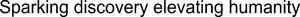

Trade Mark Journal No.2025/034 22 August 2025
WO0000001868922 (1,5,9,11,35,42,44)
Office of origin: Germany
Date of International Registration:3 March 2025
Date of designation in the UK:
3 March 2025

International priority date claimed: 20 September 2024
(Germany)
- Class 1
- Chemicals used in industry, science and photography, as well as in agriculture, horticulture and forestry; unprocessed artificial resins, unprocessed plastics; manures; fire extinguishing compositions; tempering and soldering preparations; chemical substances for preserving foodstuffs; tanning substances; adhesives used in industry; filtering media of chemical and non-chemical substances; chemical preparations and materials for use in film, photography and printing; adhesives for use in industry; detergents for use in manufacture and industry; chemical substances, chemical materials and chemical preparations and organic compositions for use in manufacturing processes, including compositions for fire extinguishing and prevention, chemical compositions and materials for use in science, chemical compositions and materials for use in cosmetics, chemical compositions for use in construction, chemical compositions for water treatment, chemical and organic compositions and substances for treatment of leather and textiles; salts for industrial purposes; unprocessed and synthetic resins; starch for use in manufacture and industry; chemical and organic compositions for use in the manufacture of food and beverages.
- Class 5
- Pharmaceutical, medical and veterinary preparations; sanitary preparations for medical purposes; dietetic food and products for medical or veterinary use, food for babies; dietary supplements for humans and animals; plasters, materials for dressings; material for stopping teeth, dental wax; disinfectants; preparations for destroying vermin; fungicides, herbicides; dietary supplements and dietetic preparations, including dietary supplements for animals; dental preparations and articles; hygienic preparations and articles, including disinfectants and antiseptics, deodorizers and absorbent articles for personal hygiene; pest control preparations and articles; medical and veterinary preparations, including diagnostic preparations, pharmaceuticals and natural remedies, medical dressings, cover sheets and applicators.
- Class 9
- Light emitting diodes; solar batteries; solar panels for generating electricity; semiconductor devices and liquid crystal displays; chromatography apparatus and instruments for laboratory, research and scientific use; filters and filtering units for laboratory, research and scientific use; test kits comprising apparatus and instruments for laboratory, research and scientific use; bioreactors for industrial use; car antennas; television antennas; satellite antennas; radar antennas; radio antennas; Internet of Things range extenders and antennas; antennas for wireless communication apparatus; glass with an electrically conductive surface, glass panes incorporating fine electrical conductors; screen components; flat panel displays, including thin-film-transistor liquid crystal displays, light emitting diodes, photovoltaic, micro-electro-mechanical and other electronic components; spectrometers for non-medical purposes; silicon wafers; structured semiconductor wafers; software applications for mobile devices; downloadable software applications for mobile devices; radio-frequency identification (RFID) tags; radio-frequency identification (RFID) readers; identification labels [encoded]; identification labels [machine-readable]; identification labels [magnetic]; electronic controllers and software for monitoring, handling, supplying and dispensing chemicals, chemical compositions, chemical mechanical planarization slurries, chemical residue removal solutions, gases and materials in the electronics, semiconductor and micro-electro-mechanical industries; electrical process control equipment for use in the electronics, semiconductor and micro-electro-mechanical industries for the production of electronic devices, namely, logic circuits, memory modules, sensors, discrete components [electronic circuit element], asynchronous and analog semiconductor devices.
- Class 11
- Semiconductor processing furnaces for processing semiconductor products; apparatus for rinsing and drying wafers; optical films as components of illumination equipment and illumination devices; water purifying apparatus for biochemical use; air purifiers.
- Class 35
- Advertising; business management; business administration; office functions; marketing and promotional services, including public relations services, product demonstrations and product display services, distribution of advertising, marketing and promotional material, digital advertising services; import and export agency services; business analysis, research and information services, including market research, collection and systematization of business data; consultancy and information on the aforesaid.
- Class 42
- Scientific and technological services and research and design relating thereto; industrial analysis and research services; design and development of computer hardware and software; hosting services and software as a service and rental of software, including hosting of digital content on the Internet; scientific and technological services, including medical and pharmacological research services; testing, authentication and quality control; consultancy and information on the aforesaid.
- Class 44
- Medical services; veterinary services; hygienic and beauty care for human beings or animals; agriculture, horticulture and forestry services; animal healthcare services; human healthcare services, including medical services, dentistry services, pharmaceutical services, opticians' services, mental health services; consultancy and information on the aforesaid.
Merck KGaA